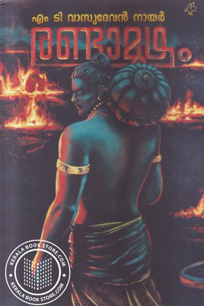
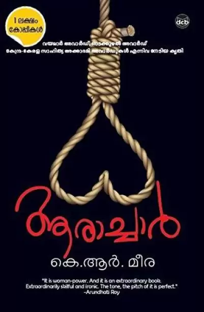
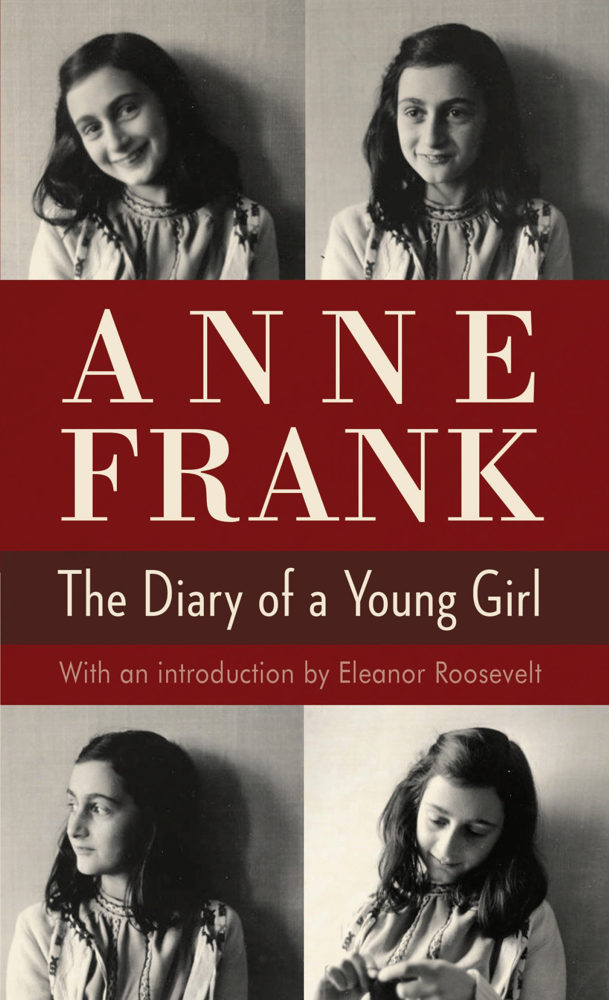

Vilayat Buddha

G.R.INDUGOPAN
Vilayat Buddha is the story of a battle between a master and a robber disciple on the hilltop of Marayur over
an ancient sandalwood tree. Love, grudge, revenge, power, contingency and helplessness create a great story
of human life.
Randamoozham

M. T. Vasudevan Nair
Randamoozham (English: The Second Turn) is a 1984 Indian Malayalam-language mythological drama novel written
by Indian author M. T. Vasudevan Nair, widely credited as his masterpiece. The work won the Vayalar
Award, given for the best literary work in Malayalam, in 1985. It also won the Muttathu Varkey Award in
1994.
Aarachaar

K. R. Meera
Aarachaar is a Malayalam novel written by K. R. Meera. Originally serialised in Madhyamam Weekly in
continuous 53 volumes, the novel was published as a book by DC Books in 2012. It was translated by J. Devika
into English under the title Hangwoman: Everyone Loves a Good Hanging.
Aadujeevitham
Benyamin
Aadujeevitham is a 2008 Malayalam novel about an abused migrant worker in Saudi Arabia written by Indian
author
Benyamin. The novel is based on real-life events and was a best seller in Kerala.
The Lord of the Rings
J. R. R. Tolkien
The Lord of the Rings is an epic high-fantasy novel by English author and scholar J. R. R. Tolkien. Set in
Middle-earth, intended to be Earth at some time in the distant past, the story began as a sequel to
Tolkien's 1937 children's book The Hobbit, but eventually developed into a much larger work.
Harry Potter

J. K. Rowling
Harry Potter is a series of seven fantasy novels written by British author J. K. Rowling. The novels
chronicle the lives of a young wizard, Harry Potter, and his friends Hermione Granger and Ron Weasley, all
of whom are students at Hogwarts School of Witchcraft and Wizardry.
Diary of a Young Girl

Anne Frank
The Diary of a Young Girl, also known as The Diary of Anne Frank, is a book of the writings from the
Dutch-language diary kept by Anne Frank while she was in hiding for two years with her family during the
Nazi occupation of the Netherlands.
Sherlock Holmes

Arthur Conan Doyle
Sherlock Holmes is a fictional detective created by British author Sir Arthur Conan Doyle. Referring to
himself as a "consulting detective" in the stories, Holmes is known for his proficiency with observation,
deduction, forensic science and logical reasoning that borders on the fantastic, which he employs when
investigating cases for a wide variety of clients, including Scotland Yard.